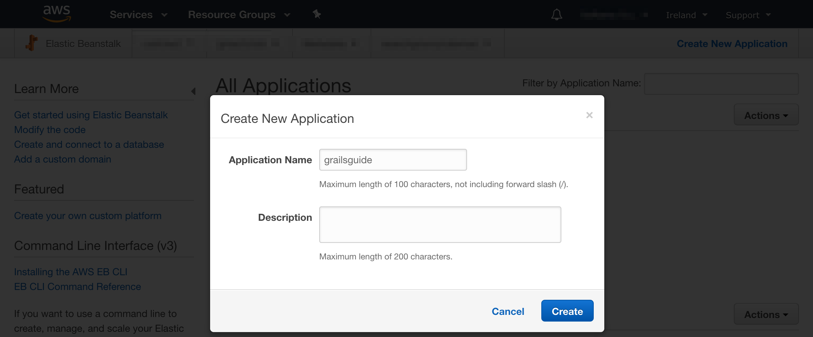
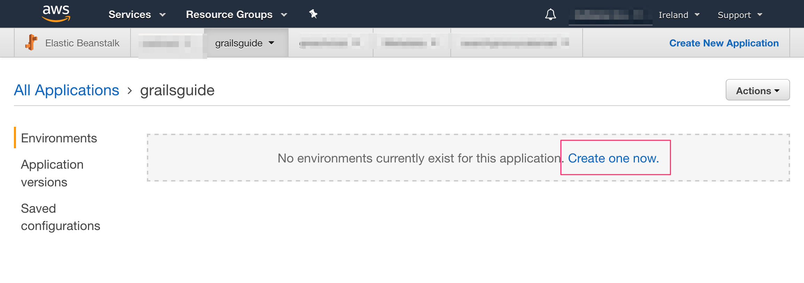
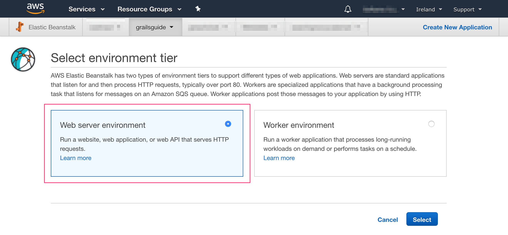
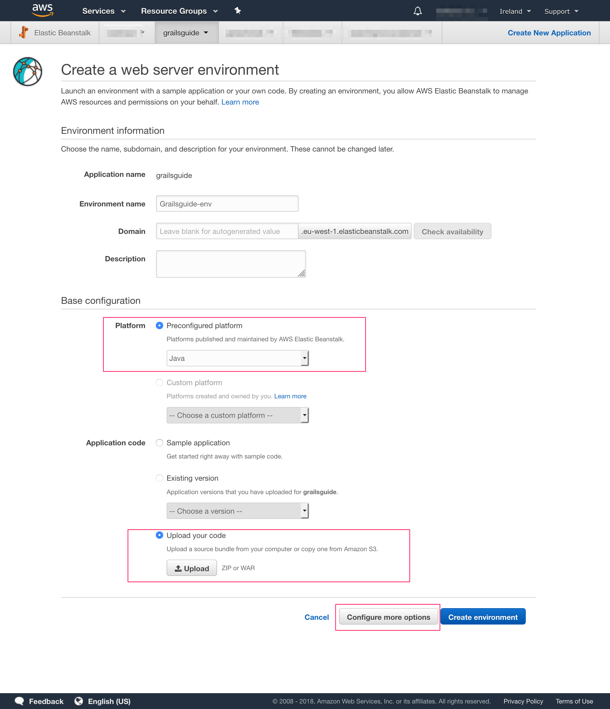
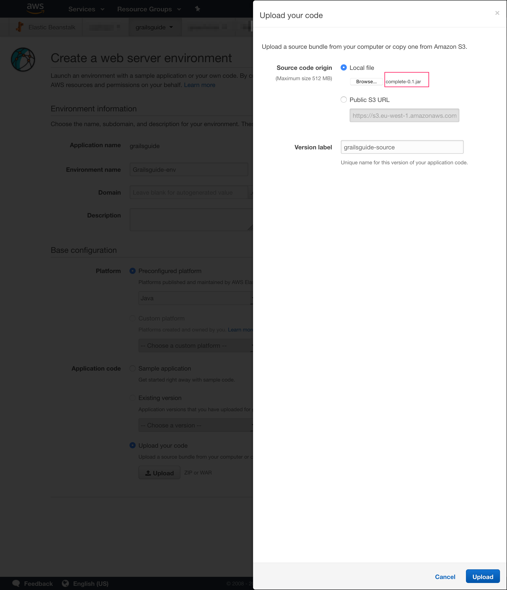
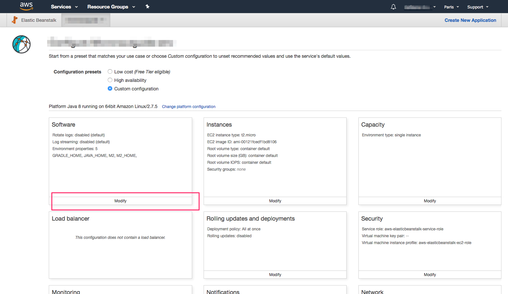
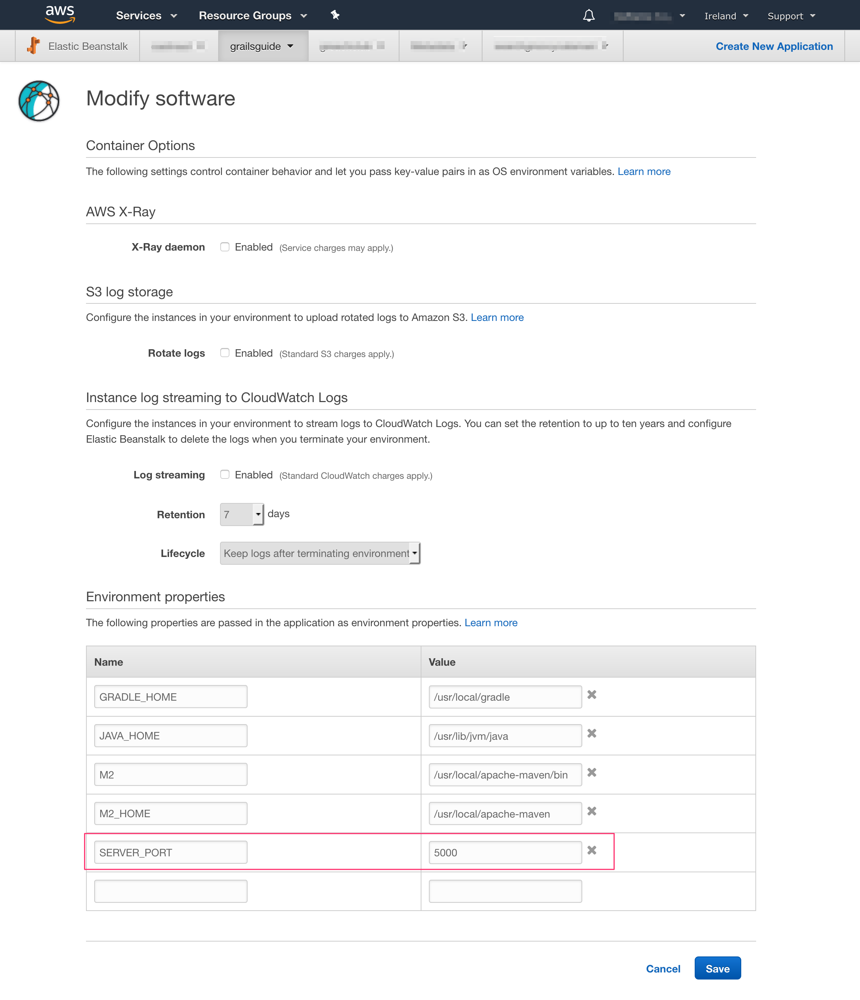
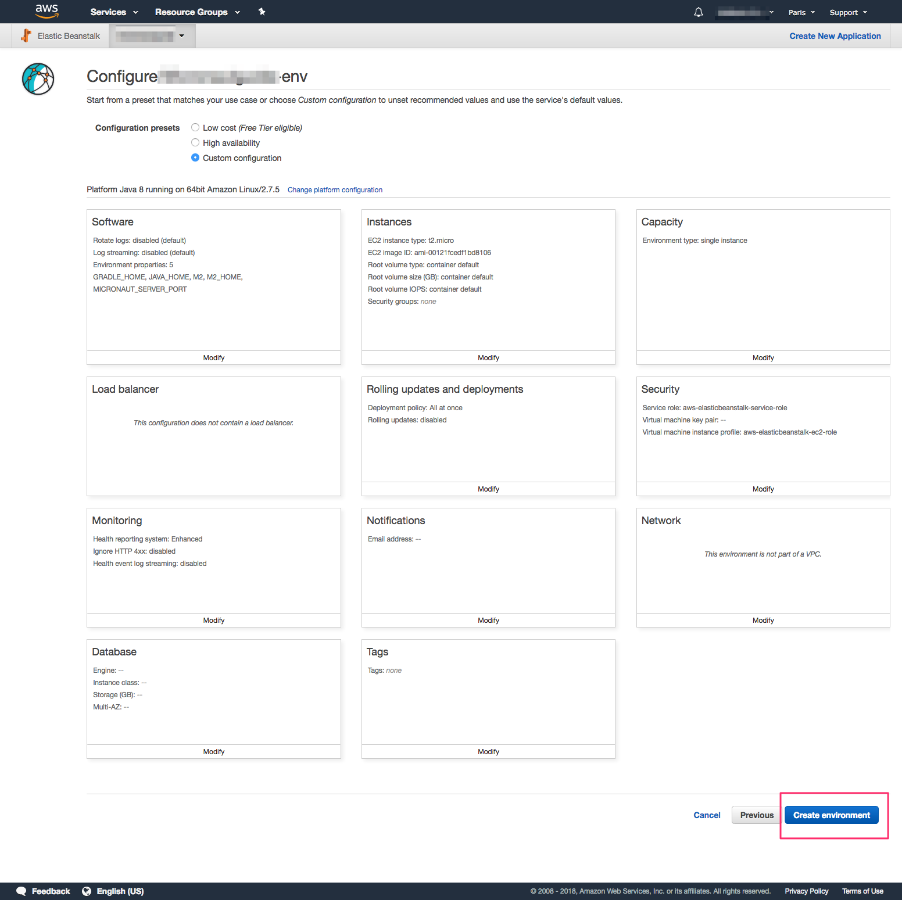
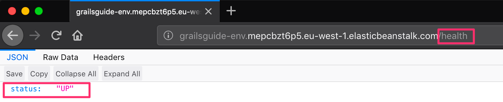

Deploy to AWS ElasticBeanstalk
Learn how easy is to deploy a Grails App to Elastic Beanstalk.
Authors: Sergio del Amo
Grails Version: 4
1 Getting Started
In this guide, you will learn how to deploy a Grails app to AWS Elastic Beanstalk.
AWS Elastic Beanstalk is an easy-to-use service for deploying and scaling web applications and services developed with Java.
1.1 What you will need
To complete this guide, you will need the following:
-
Some time on your hands
-
A decent text editor or IDE
-
JDK 11 or greater installed with
JAVA_HOMEconfigured appropriately
You will need also an AWS Account.
1.2 Solution
We recommend you to follow the instructions in the next sections and create the app step by step. However, you can go right to the completed example.
-
Download and unzip the source
or
-
Clone the Git repository:
git clone https://github.com/grails-guides/grails-elasticbeanstalk.git
Then, cd into the complete folder which you will find in the root project of the downloaded/cloned project.
2 Writing the App
Create the app:
grails create-app example.grails.completeEnable Spring Boot Actuators:
endpoints:
enabled: true
jmx:
enabled: trueAdd Micronaut HTTP Client dependency which we will use shortly in a functional test.
repositories {
..
mavenCentral()
..
}
dependencies {
..
testCompile "io.micronaut:micronaut-http-client:$micronautVersion"
..
}Once you enable the Spring Boot actuators a /health endpoint is exposed.
Create a test which verifies it:
package example.grails
import grails.testing.mixin.integration.Integration
import spock.lang.AutoCleanup
import spock.lang.Shared
import spock.lang.Specification
import io.micronaut.http.HttpRequest
import io.micronaut.http.client.HttpClient
import grails.testing.spock.OnceBefore
@Integration
class HealthSpec extends Specification {
@Shared
@AutoCleanup
HttpClient client
@OnceBefore (1)
void init() {
String baseUrl = "http://localhost:$serverPort" (2)
client = HttpClient.create(new URL(baseUrl))
}
void "health responds OK"() {
when:
Map m = client.toBlocking().retrieve(HttpRequest.GET("/health"), Map) (3)
then:
m
m.containsKey("status")
m.get("status") == "UP"
}
}| 1 | The grails.testing.spock.OnceBefore annotation is a shorthand way of accomplishing the same behavior that would be accomplished by applying both the @RunOnce and @Before annotations to a fixture method. |
| 2 | serverPort property is automatically injected and it contains the random port where the app will be running for the functional test. |
| 3 | Creating HTTP Requests is easy thanks to Micronaut’s fluid API. |
3 Deploy to Elastic Beanstalk
Let’s do a FAT Jar deployment.
Edit build.gradle. Don’t apply war Gradle plugin.
//apply plugin:"war"Generate a Fat Jar with gradle command.
$ ./gradlew assemble
$ du -h build/libs/complete-0.1.jar
40M build/libs/complete-0.1.jarThe next screenshots illustrate the steps necessary to deploy an Grails app to AWS Elastic Beanstalk:



-
Select Java Platform.
-
Click Upload button

Upload your JAR.

Before you create the enviroment click "Configure more options". If you forget, you could change this after you created the environment.
By default, Grails applications will listen on port 8080. Elastic Beanstalk assumes that the application will listen on port 5000. There are two ways to fix this discrepancy: change the port Elastic Beanstalk is configured to use, or change the port the Grails application listens on. For this post, we will change the port the Grails application listens on.
The easiest way to do this is to specify the SERVER_PORT environment variable in the Elastic Beanstalk environment and set the value to 5000.
On the Configuration page in your environment, under Software Configuration, click the settings icon.


Now you are ready to click Create Environment.

After a few minutes you will be able to access the /health endpoint.

4 Next Steps
Grails 3 apps are Spring Boot apps. Read Deploying a Spring Boot Application on AWS Using AWS Elastic Beanstalk tutorial to learn more.
Explore more features with Grails Guides.